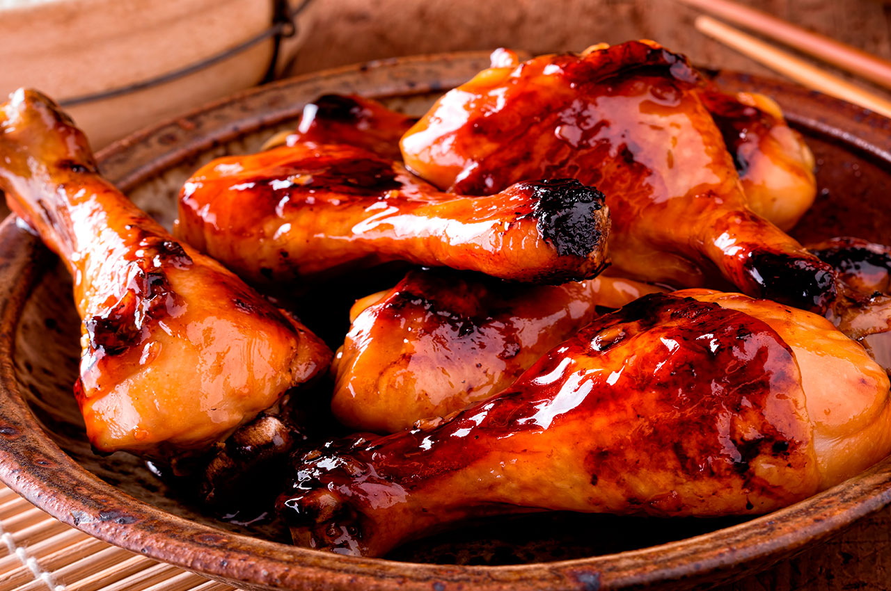

RECETA DE POLLO A LA MIEL
INGREDIENTES
- 6 Muslos de Pollo salpimentados.
- 2 Cdas de Miel.
- 2 Cdas de Salsa de Soya.
- 2 Dientes de ajo triturados.
- Aceite.
PREPARACIÓN
- Paso 1: En un sartén a fuego alto, agrega un chorrito de aceite y cocina los muslos de pollo hasta que sellen por ambos lados.
- Paso 2: Una vez cocidos sácalos y colócalos en un plato aparte.
- Paso 3: En el mismo sartén a fuego medio, agrega un chorrito más de aceite si es necesario y fríe el ajo triturado hasta que dore.
- Paso 4: Añade las dos cucharadas de salsa de soya, las dos cucharadas de miel y resuelve hasta que se integre.
- Paso 5: Vuelve a agregar el pollo ya cocido y cúbrelo con la salsa.
- Paso 6: Cocina por 5 minutos más y listo.
- Paso 7: Sirve y disfruta.